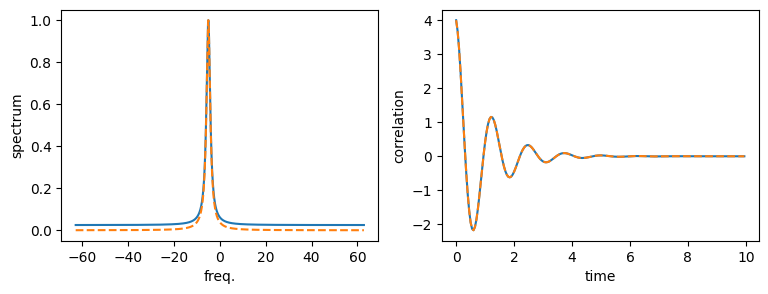

This notebook can be found on github
Two-time correlation function and spectrum of a Fock state
Consider a Fock state of $n$ photons inside a damped cavity, that undergoes the free dynamics. The Hamiltonian is
$H = -\Delta a^\dagger a$,
while the damping is described by the Lindblad term
$\mathcal{L}[\rho] = \kappa\left(2a\rho a^\dagger - a^\dagger a \rho - \rho a^\dagger a\right)$.
Here, the detuning $\Delta = \omega_\mathrm{r} - \omega_\mathrm{c}$ is the detuning between the cavity frequency $\omega_\mathrm{c}$ with respect to some reference frequency $\omega_\mathrm{r}$. We chose this simple example, since it can be solved analytically. We do this by writing down the Quantum Langevin equation for the operator $a$,
$\dot{a} = \left(i\Delta - \kappa\right)a + \sqrt{2\kappa}a_{\rm in}(t)$.
Here $a_{\rm in}$ is the input noise operator. The two-time correlation function is defined by
$g(t,\tau) = \langle a^\dagger(t+\tau)a(t)\rangle$.
In the following we choose $t=0$ and use the short-hand notation $g(\tau)\equiv g(0,\tau)$. Taking the derivative with respect to $\tau$, we find
$\partial_\tau g(\tau) = \langle \dot{a}^\dagger(\tau) a(0)\rangle = \left(i\Delta - \kappa\right) g(\tau)$,
where we used $\langle a_{\rm in}^\dagger(t) a\rangle = 0$. The equation above is a simple differential equation which has the solution
$g(\tau) = g(0) e^{-i\Delta\tau}e^{-\kappa\tau} = n e^{-i\Delta\tau}e^{-\kappa\tau}$,
where $n$ is the photon number of the initial state.
Therefore, we find by the Wiener-Khinchin theorem that the spectrum is
$S(\omega) = 2\Re\left\{\int_0^{\infty} d\tau e^{-i\omega\tau}g(\tau) \right\} = 2\Re\left\{\frac{n\left(-i(\omega + \Delta) + \kappa\right)}{\left(\omega + \Delta\right)^2 + \kappa^2}\right\} = \frac{2n\kappa}{(\omega + \Delta)^2 + \kappa^2}$.
In the following program, we check this result with the implemented functions in the module timecorrelations.jl As usual, we start by including the libraries we require. In order to save us some code typing, we substitute the functions from the timecorrelations module.
using QuantumOpticsusing PyPlotNext, we define the necessary parameters. In this example, we use a Fock state containing $n=4$ photons.
Nc = 10κ = 1.0n = 4Δ = 5.0κAfter defining our basis and the annihilation operator $a$, we can write down the Hamiltonian and the jump operators.
basis = FockBasis(Nc)a = destroy(basis)H = -Δ*dagger(a)*aJ = [sqrt(2κ)*a]Defining the initial density matrix $\rho_0$ corresponding to the $n$ photon Fock state, we can calculate the correlation function for a list of times $\tau$. Note, that in theory, when calculating the spectrum, the integral goes to infinite times. Obviously, we require a finite time numerically, but we set it sufficiently large.
ρ₀ = fockstate(basis, n) ⊗ dagger(fockstate(basis, n))dτ = 0.05τmax = 1000τ = [0:dτ:τmax;]corr = timecorrelations.correlation(τ, ρ₀, H, J, dagger(a), a)The function timecorrelations.spectrum calculates the correlation internally by solving the corresponding time evolution. Since we already calculated the correlation, it is more efficient to use timecorrelations.correlation2spectrum, which in our shorthand notation is corr2spec. This function only performs the necessary Fourier transform.
ω, spec = timecorrelations.correlation2spectrum(τ, corr; normalize_spec=true)Finally, we implement the analytical results we obtained in the beginning.
corr_an = n.*exp.(-1.0im*Δ.*τ).*exp.(-κ.*τ)spec_an = 2n*κ./((Δ .+ ω).^2 .+ κ^2)spec_an ./= maximum(spec_an)figure(figsize=(9, 3))subplot(121)plot(ω, spec, label="numerical")plot(ω, spec_an, ls="dashed", label="analytical")xlabel("freq.")ylabel("spectrum")subplot(122)plot(τ[1:200], real(corr[1:200]))plot(τ[1:200], real(corr_an[1:200]), ls="dashed")xlabel("time")ylabel("correlation")
Note, that the discrepancy in the base line of the spectrum stems from numerical errors, namely the fact that the time- and frequency steps and also the final time are finite. Reducing $d\tau$ and increasing $\tau$max reduces the error.